июня 8, 2015
июня 8, 2015  admin
admin Элементы управления VBA, добавление элементов управления на форму
июня 8, 2015 admin
Элементы управления — это специализированные объекты, которые можно размещать на формах VBA (и непосредственно в документах), используемые для организации взаимодействия с пользователем. В VBA вы можете использовать как стандартные элементы управления (CommandButton, CheckBox, OptionButton), так и нестандартные (любые другие, которые есть на вашем компьютере, например, Internet Explorer, Calendar и т.п.) Элементы управления реагируют на события, которые генерирует пользователь (нажатие на кнопку, ввод значения, перемещение ползунка и т.п.)
Добавление элементов управления на форму чаще всего производится из дизайнера форм при помощи Toolbox. Для этого необходимо выбрать элемент управления в Toolbox и перетащить его на форму или (что более удобно) выделить элемент управления в Toolbox и затем на форме выделить ту область экрана, которую будет занимать этот элемент управления.
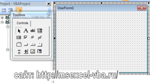
Добавление элементов управления можно производить и программным способом (при помощи метода Add() коллекции Controls), однако вам при этом придется указывать в коде программы большое количество свойств создаваемого элемента управления, что не очень удобно.
Обобщеную информацию об элементах управления (название, значок, описание) можно прочитать здесь
Элемент управления Label
Это — самый простой элемент управления.
Надпись — это просто область формы, в которой выводится какой-то текст.
Пользователь не может изменять этот текст. Чаще всего элемент управления Label используется как строка состояния с объяснением того, что сейчас произошло/происходит/должен сделать пользователь и т.п.
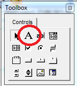
рис .1.1 Элемент управления Label на панели ToolBox
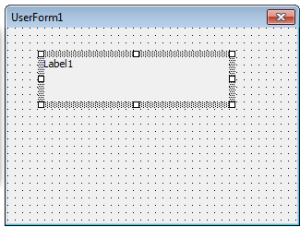
рис. 1.2 Элемент управления Label на форме
Подробнее можете прочитать здесь
Элемент управления TextBox
Текстовое поле (TextBox) — один из самых часто используемых элементов управления
Текстовое поле используется:
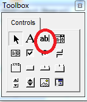
рис . 2.1 Элемент управления Textbox на панели ToolBox

рис. 2.2 Элемент управления Textbox на форме
Подробнее можете прочитать здесь
Элемент управления ComboBox
Комбинированный список также используется очень часто. Этот элемент управления позволяет пользователю как выбирать “готовые” значения из списка, так и вводить значения самостоятельно (хотя это можно запретить).
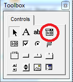
рис . 3.1 Элемент управления Combobox на панели ToolBox

рис. 3.2 Элемент управления Combobox на форме

рис. 3.3 Пример элемента управления Combobox на форме
Подробнее можете прочитать здесь
Элемент управления ListBox
Этот элемент управления очень похож на комбинированный список, но применяется гораздо реже по двум причинам:
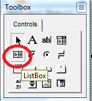
рис . 4.1 Элемент управления Listbox на панели ToolBox
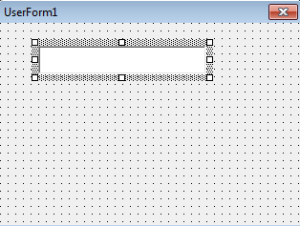
рис. 4.2 Элемент управления Listbox на форме
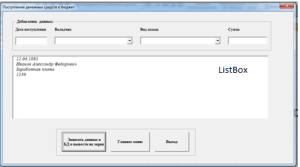
рис. 4.3 Пример элемента управления Listbox на форме
Подробнее можете прочитать здесь
Элементы управления CheckBox (флажок) и OptionButton (переключатель)
Флажки (пользователи часто называют их “галками” или “птичками”) и кнопки с фиксацией используются для выбора невзаимоисключающих вариантов (если этих вариантов немного).
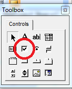
рис . 5.1 Элемент управления Checkbox на панели ToolBox
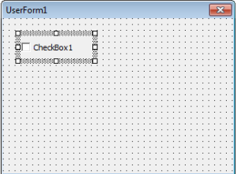
рис. 5.2 Элемент управления Checkbox на форме
рис. 5.3 Пример элемента управления Checkbox на форме
Подробнее можете прочитать здесь
Если CheckBox предназначен для выбора невзаимоисключающих вариантов, то OptionButton как раз нужен для выбора варианта в ситуации или/или.
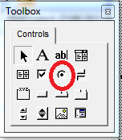
рис . 6.1 Элемент управления OptionButton на панели ToolBox

рис. 6.2 Элемент управления OptionButton на форме
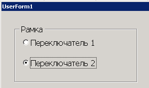
рис. 6.3 Пример элемента управления OptionButton на форме
Подробнее можете прочитать здесь
Элементы управления Frame (рамка)
Frame — это просто рамка, которая выделяет прямоугольную область на форме и позволяет организовать элементы управления. Помещенные внутрь рамки переключатели считаются взаимоисключающими, остальные элементы управления ведут себя точно так же, хотя иногда бывает полезно с точки зрения наглядности свести вместе под одной рамкой, к примеру, набор флажков.
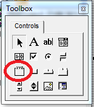
рис . 7.1 Элемент управления Frame на панели ToolBox

рис. 7.2 Элемент управления Frame на форме
рис. 7.3 Пример элемента управления Frame на форме
Подробнее можете прочитать здесь
Элемент управления CommandButton (кнопка) и ToggleButton (кнопка с фиксацией)
CommandButton это кнопка, управляющая кнопка. При нажатии на кнопку в приложении выполняются определенные, разработчиком, действия. Применяется для выполнения команд и запуска программ.
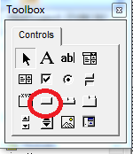
рис . 8.1 Элемент управления CommandButton на панели ToolBox

рис. 8.2 Элемент управления CommandButton на форме

рис. 8.3 Пример элемента управления CommandButton на форме
Подробнее можете прочитать здесь
ToggleButton выглядит как кнопка, которая при нажатии становится “нажатой”, а при повторном нажатии отключается.
Свойства и методы — те же самые. Единственное отличие — в восприятии их пользователем. Обычно ToggleButton воспринимается пользователем как переход в какой-то режим или начало выполнения продолжительного действия.

рис . 9.1 Элемент управления ToggleButton на панели ToolBox

рис. 9.2 Элемент управления ToggleButton на форме
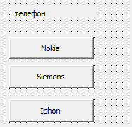
рис. 9.3 Пример элемента управления ToggleButton на форме
Подробнее можете прочитать здесь
Элементы управления ScrollBar (полоса прокрутки) и SpinButton (счетчик)
Полосы прокрутки (ScrollBars) чаще всего встречаются в текстовых полях, когда введенный текст полностью на экране не умещается. Однако ничего не мешает вам использовать ScrollBar как отдельный элемент управления (пользователи часто называют его “ползунок”) — для выбора пользователем какого-то значения из диапазона. Обычно такой элемент управления используется для выбора плавно меняющихся значений — например, уровня громкости, яркости, сжатия, приоритета и т.п.

рис . 10.1 Элемент управления ScrollBars на панели ToolBox
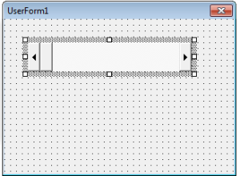
рис. 10.2 Элемент управления ScrollBars на форме

рис. 10.3 Пример элемента управления ScrollBars на форме
Подробнее можете прочитать здесь
Элемент управления SpinButton — эта та же полоса прокрутки, лишенная самой полосы и ползунка. SpinButton используется в тех ситуациях, когда диапазон выбираемых значений совсем небольшой (например, надо выбрать количество копий для печати отчета). Все свойства, которые есть у SpinButton, совпадают со свойствами ScrollBar.
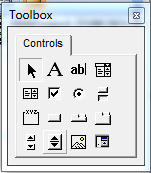
рис . 11.1 Элемент управления SpinButton на панели ToolBox
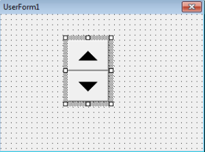
рис. 11.2 Элемент управления SpinButton на форме

рис. 11.3 Пример элемента управления SpinButton на форме
Подробнее можете прочитать здесь
Элементы управления TabStrip и MultiPage
Оба этих элемента управления применяются в одной и той же ситуации — когда элементов управления слишком много, чтобы уместить их на одной странице формы. Эти элементы управления позволяют создавать на форме несколько вкладок (Page, страниц), между которыми сможет переходить пользователь. Принципиальное отличие между этими элементами управления заключается в том, что на вкладках TabStrip всегда располагаются одинаковые элементы управления, а MultiPage — разные.

рис . 12.1 Элемент управления TabStrip на панели ToolBox
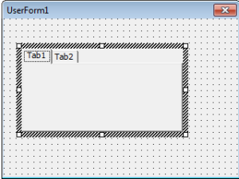
рис. 12.2 Элемент управления TabStrip на форме
Подрообнее о TabStrip можно прочитать здесь

рис . 13.1 Элемент управления MultiPage на панели ToolBox
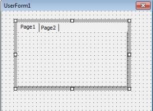
рис. 13.2 Элемент управления MultiPage на форме
Подробнее о MultiPage можно прочитать здесь
Элемент управления Image
Пожалуй, самый простой из элементов управления. Позволяет отобразить на форме рисунок в одном из распространенных форматов, который будет реагировать на щелчок мышью (а может просто использоваться для украшения формы).
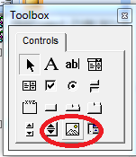
Рис. 14.1 Элемент управления Image на панели ToolBox
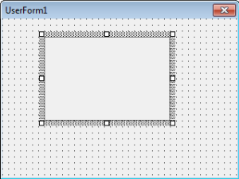
Рис. 14.2 Элемент управления Image на форме
Некоторые замечания по использованию Image:
Подробнее можете прочитать здесь
Дополнительные элементы управления VBA: Microsoft Web Browser, Calendar, RefEdit
Мы рассмотрели стандартные элементы управления, которые изначально помещены в ToolBox и доступны для размещения в формах. Однако, конечно, возможности форм VBA этим не ограничиваются. В вашем распоряжении — сотни и тысячи элементов управления, встроенных в Windows, в другие продукты или поставляемые отдельно (в том числе третьими фирмами). Для того, чтобы можно было разместить их на форме, щелкните правой кнопкой мыши по пустому пространству в ToolBox и выберите пункт Additional Controls — а далее выберите нужный элемент. Правда, при применении нестандартных элементов управления необходимо помнить, что при переносе программы (файла Office) на другой компьютер вам потребуется обеспечить на нем наличие необходимых библиотек.
Подробнее о элементе управления RefEdit можете прочитать здесь